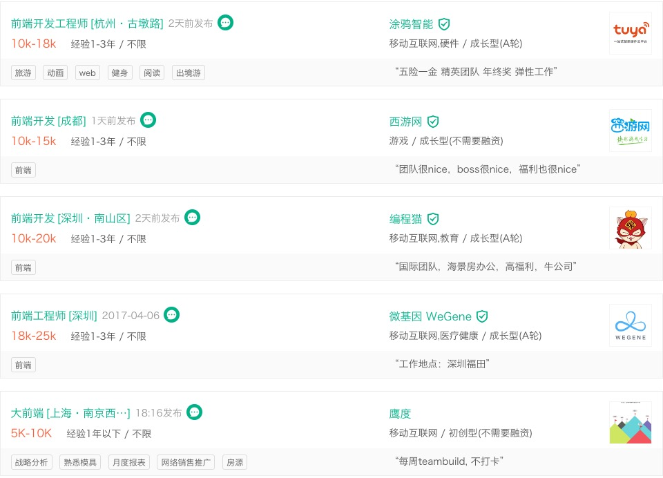
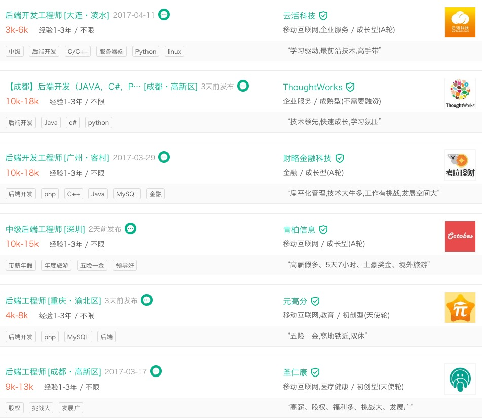

属于程序员的未来|终极揭秘web前端后端开发
前言
日常生活中，很多网页呈现出来的简洁布局、精心设计以及各种灵动效果总是让我们赞叹不已，而创造这些酷炫体验的，正是背后的 web 开发者。早在3年前，互联网就囊括了六亿八千多万的页面，这个数字还在持续快速增长。据估计，该方向人才需求在未来十年内会稳定增长，前景非常广阔。
从技术角度来看，Web 开发大致可分为三个具体方向：前端、后端和全栈。无论你选取哪个具体方向，快速学习、关注细节、沟通能力等软实力，都将对你掌握具体技术有帮助。同时如果你对 HTML、CSS、Javascript均有耳闻，或是会一点 Python想入门前端，可不太确定要在哪个方向上投入精力，那么这篇文章就是为你准备的！
前端方向
前端开发，就是要创造上面提到的网站面向用户的部分背后的代码，并通过建立框架，构建沉浸性的用户体验。为了实现这个目标，开发需要熟练运用下列语言、框架、工具库：
- 三大基础：HTML, CSS和Javascript
- 主流前端框架：Angular2、Vue.js、React它们可以帮助打造在电脑、手机、平板上都能有良好效果的页面；
- 此外，掌握 jQuery 和 LESS 等工具库也很重要，它们能帮助开发者以更高效的方式编码；
- 很多前端开发岗也要求 Ajax 方法的使用经验，它可以帮助你使用 Javascript 在后台从服务器拉取数据，协助实现页面的动态加载。
打个比方，前端开发者的工作专注于“房屋”装修，而盖房子的工作由后端开发者负责。
通过一些专门的工具，前端开发者与设计师/用户体验分析师密切合作，帮助构建原型或是线框图，参与产品开发到发布的全过程。一些前端开发者甚至能准确定位影响用户体验的特定问题，并给出建议或是代码解决方案，对产品设计带来积极影响。在专业能力外，与其它团队协作，以理解特定目标、需求、机遇，以及高效的执行力也非常重要。
总之，前端开发者要为后端开发者搭建的“房屋”进行内部设计和装修工作。装潢风格由房屋所有者指定。
“前端开发者有时更容易为他们的工作感到振奋，因为他们有更广阔的空间发挥自己的创造力。”——Apptix 的产品市场负责人 Greg Matranga 表示。
薪资
以下为在某主流互联网行业招聘网站上，搜索“前端”限定“3年及以内”，学历不限后最先出现的几份岗位待遇信息。下文中后端薪资信息截图条件相同。
后端方向
是什么给网站前端提供支持？数据存放在哪里？这就涉及后端内容了。网站后端包括服务器、应用还有数据库。后端开发者构建并维护这些组件，为网站提供多方面支持。
技能和工具
为了让服务器、应用、数据库能够彼此交互，后端工程师需要具有如下技能：
- 用于应用构建的服务器端语言：PHP, Ruby, Python, Java, .Net ，Node.js等；
- 数据相关工具： MySQL,Oracle, SQL Server,MongoDb 等；
- PHP框架： Zend, Symfony, CakePHP等；
- 版本控制工具：SVN, CVS ,Git 等；
还要熟练使用 Linux 作为开发和部署环境。
后端开发者使用这些工具编写干净、可移植、具有良好文档支持的代码来创建或更新 Web 应用。但在写代码之前，他们需要与客户沟通，了解其实际需求并转化为技术目标，制定最有效且精简的方案来进行实现。
“我热爱后端开发因为我喜欢操纵数据”，“现在共有和私有API 已变成移动设备、网站以及其它互联系统交换数据的必备通道。创建对大家有用的 API 是我工作里非常鼓舞人心的部分”——资深后端开发者就职于 Wildbit 的 JP Toto 。
薪资参考

总结
未来是属于程序员的未来，从今天往后的10年程序员的地位就是10年前建筑，金融的地位。
英雄不问出处，选择决定未来！！！